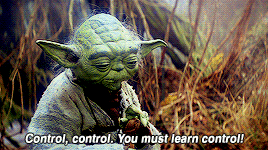
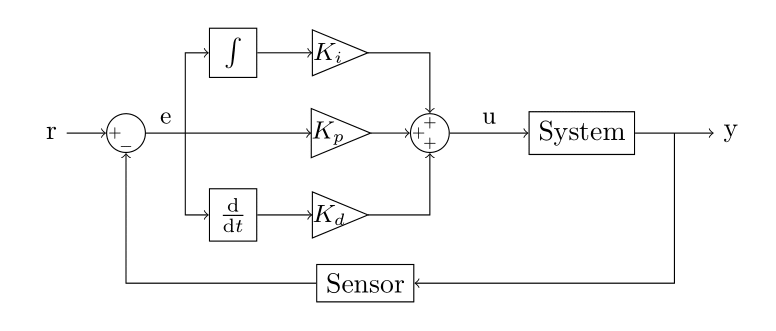
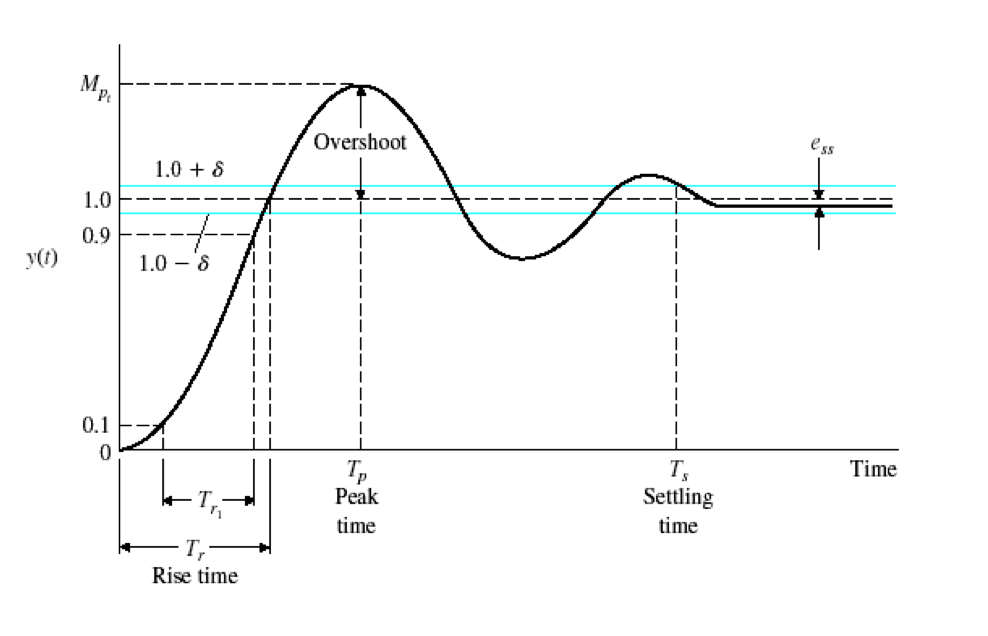
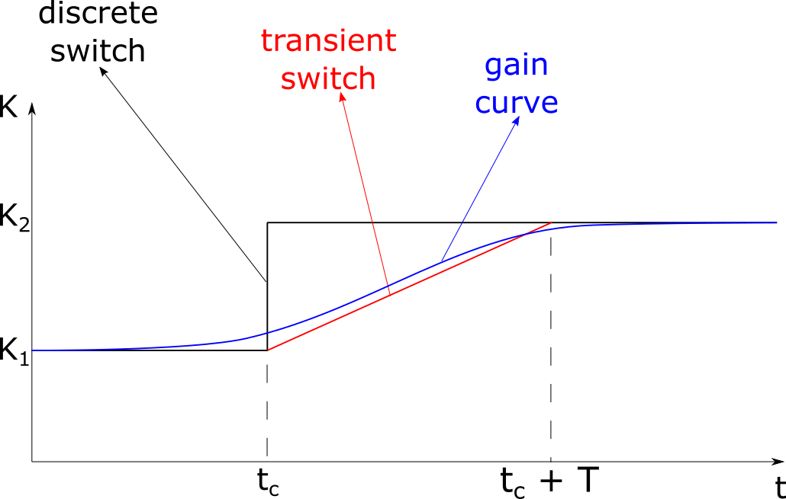

Gain Scheduling¶
You assembled your car, connected it to your computer, tested the electronics, and hopefully got to run a few laps. So, what's next? Yoda has the answer for you!

We have already encouraged you to improve the original self-driving code by adding integral and derivative terms to the PID controller. We will now introduce a new control technique called Gain Scheduling, which can be seen as an extension of PID.
Note
The following is a very simplified view of the topics. This is just to provide you an intuition of how the controllers work.
Feedback Control¶
Let's start with a quick recap on feedback control. One of the simplest ways to represent a typical control problem is through a block diagram.

Our goal is to make the system output y as close as possible to the reference r. In order to do that, we use a sensor to measure variable y, compute the difference between current and desired value to obtain the error e and feed it to a controller. And here is where the magic happens. The controller block is responsible for transforming the measured error e into a command u which brings the system's output y closer to the reference r.
Exercise: Try to identify each of the elements in the block diagram in the context of Race On. What is the system and what is the sensor? Which variables in your code are r, e, y and u?
Controllers can take very different forms. One example is the on-off mechanism of the heaters with a thermostat: the heater turns on when the temperature is below the reference and it turns off when the temperature is above the reference. Another example is the proportional controller, which can be described by u = Ke. We can also have a controller which computes system inputs based not only on the current error, but also based on the error integral and derivative. This leads to the famous PID controller.

Note, the above diagram is for continuous time systems, our car is a discrete time system since we send one control command per image and not continuously while waiting for the next image. In discrete time systems the integral is replaced with the sum operator and the derivative with the difference between current and past error. The controller gains Kp, Ki, and Kd have to be selected such that the system presents the desired behavior (fast convergence to r, low overshooting etc). If we have a mathematical model of the system, there are analytical and graphical tools that help tuning the gains. In other cases, the gains are set using trial and error.
Exercises:
- If you haven't yet, try to implement a PID controller for your car. You can reference this pseudocode.
- Search online for hints on how to tune the different gains. What are the expected effects of increasing/decreasing each one of them?
Step Response¶
Before we dive deeper into more advanced controllers, we first need to know how to measure the performance of different controllers. The most simple and at the same time informative method is the step response shown in the figure below. 
The step response is obtained by suddenly cheanging the reference from one value to another, in the figure above is from zero to one, and tracking how the controller responds to this change. To get a step response using you car, run the car on a straight line and after one second switch the reference value from CAMERA_CENTER to CAMERA_CENTER - 100 and save the values of line_pos into an array, stop the car after a timeout and plot the array to see the step response. Repeat with a step in a different direction CAMERA_CENTER + 100 to make sure your car responds to left and right turns equally.
The most important metrics of the step response are rise time, overshoot, and settling time.We want a fast rise time with no overshoot and low settling time, however, in practice we have to accept a tradeoff as optimizing all three at the same time is most of the time impossible. Rise time is defined as the time from when the reference value changed until we reach the new reference (or 0.9 of the new refence value). A high gain (high value of the proportional and derivative coefficients) leads to a fast response time but also to an overshoot. Overshoot defines by how much we miss the new reference once we reach the new reference value for the first time. A high overshoot can make you car run off the track as you exit the turn, but a small overshoot can be tolerated and help decreases the rise time. Settling time is the time between the reference change and the time the system stabilizes around it. A low settling time helps if there are a sequence of turns as the car will stay closer to the reference.
Gain Scheduling¶
A well tuned PID controller can yield very good performance. However, what happens if the operating condition changes? Airplanes are a good example. The system behaves remarkably different at take-off, in-flight and on landing. In these cases, the gains tuned for one operating condition might not lead to the desired behavior when the system is at another operating point. One possible solution to this problem is gain scheduling. It is usually done in 4 steps:
- Define the different system operating conditions;
- Tune your controller gains for each operating condition. This will create an array (or a table) of controller gains;
- Determine how to vary the controller gains based on the operating conditions;
- Assess system performance.
Steps 1, 2, and 4 are the same as you would do for a regular PID controller. Step 3 is the fun part! The main options are:
- Simple switch: change the gains when the system is at a different operating point. The advantage of this method is its simplicity. However, this creates discontinuities. If the error is 2 and the gain changes from 2 to 5, your control input jumps from 4 to 10! This can damage actuators or create undesirable system behavior.
- Transient switch: when the operation conditions change, linearly change from one gain to the other within a certain time interval. The trick here is to choose the time interval long enough to create a smooth transient but short enough to allow the controller to respond properly to the operating condition change.
- Interpolate between gains: we can avoid switching by creating a curve that smoothly changes between gains continuously. This is possible when the operating conditions also change continuously.
The three cases are illustrated below, where tc is the time when the operating condition change is identified, and T is the transient time for the transient switch approach.

For a more in depth introduction to gain scheduling, we recommend watching this video.
Applied to Race On¶
For now, let's assume your car is set to a constant speed and we only want to control the position relative to the center of the track. We will reference the original code provided with the car but it should be easy to adapt these instructions to your modified code. If you have any issues with it, remember you can always check the original code at the race on github. We follow the 4 steps described previously:
-
Define the different system operating conditions.
Even though the car itself doesn't change much during the race, the track varies considerably. We can define three different operating modes for the car: straight line, 90o turn and 180o turn. Next, we have to find a way to identify these conditions. One way of doing this is by looking at the error. This requires a few steps and some tuning. Let's get to it!
Create an error array in your code before the loop starts and populate the array at every iteration:
Then, run a lap on the track and plot your error with the command1 2 3 4 5
error_array = [] for f in stream: [...] error = CAMERA_CENTER - line_pos error_array.append(error)plt.plot(error_array). You should be able to map different peaks and valleys on your error plot to straight lines, 90o and 180o turns on the track. After this, you can create thresholds to identify when the car is in each of these scenarios. -
Tune your controller gains for each operating condition.
While it's complicated to tune the controller individually for each operating condition, we can use our knowledge of the problem to estimate how the gains should change. Intuitively, an error on a straight line doesn't need to be corrected as aggressively as errors on turns. Therefore, let's define:
1 2 3
K_0 = 5000 K_90 = 7000 K_180 = 9000 -
Determine how to vary the controller gains based on the operating conditions
We will use a simple discrete switch. Based on your observation of the errors, create thresholds and use them to choose your gain:
1 2 3 4 5 6 7 8 9 10 11 12
e_90 = 50 e_180 = 75 [...] for f in stream: [...] gain = K_0 if error > e_180: gain = K_180 elif error > e_90: gain = K_90 DUTY_CYCLE = SERVO_MIDDLE + gain*error -
Assess system performance.
Use the error plot to check your car performance on the track. Is it overshooting after turns? Does it take too long to realize it's in a turn? Or maybe it takes too long to realize it's back on a straight line? You should adjust the gains and thresholds to optimize your controller and start doing some aggressive turns!
Exercises
- You probably noticed our example only covers the proportional gain. Include integral and derivative gains in your gain scheduling routine.
- Test the same approach for speed scheduling. Define three different speeds (one for each operating condition) and switch among them to see if you can get faster laps.
- This is just one of numerous ways to apply gain scheduling to your vehicle controller. You are encouraged to try other approaches!